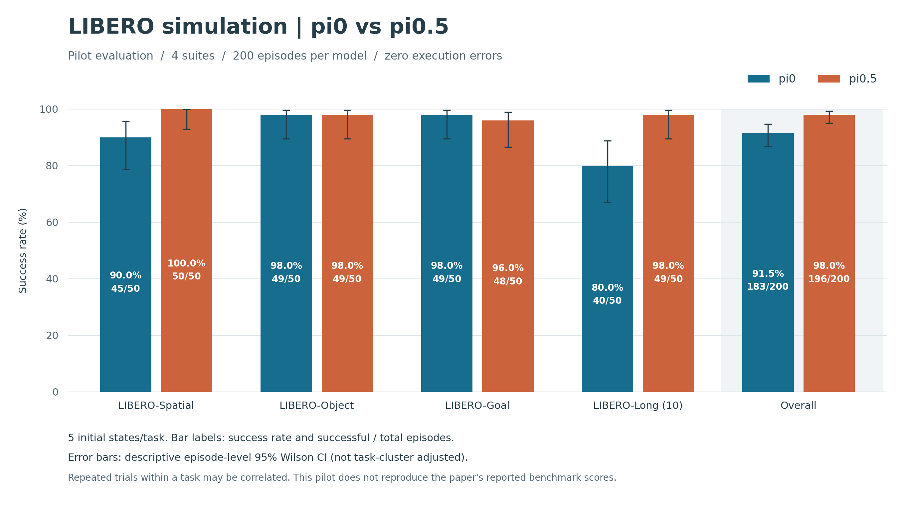

LIBERO 仿真：π0 与 π0.5 对比
完整结果与全部视频 · 汇总 JSON · 套件结果 CSV · 逐轮原始记录 JSONL · 矢量图 SVG

本页展示各类结果的示例，不代表整体分布。每类最多选取一对，按套件、任务、试验顺序选择；初始状态编号与哈希、环境随机种子、策略随机种子均须一致。视频需手动播放，两侧播放进度不自动同步。成功率比较请以完整结果为准。
每项任务使用 5 个初始状态；本轮属于初步小样本评测，不是论文表值复现。任务、试验与初始状态编号均从 0 开始。
仅 π0.5 成功
libero_10 · 任务 0 · 试验 4
put both the alphabet soup and the tomato sauce in the basket
初始状态编号：4 · 环境随机种子：7 · 策略随机种子：30011
初始状态 SHA-256：376f48b75f50d4e1eff9e3f49f307de0bcfc44d2a081f5cb9c124cf985330c41
仅 π0 成功
libero_goal · 任务 3 · 试验 4
open the top drawer and put the bowl inside
初始状态编号：4 · 环境随机种子：7 · 策略随机种子：20311
初始状态 SHA-256：381710192b1ff677bcd7d527862259d76ad3ba790085e016693ec9b39718baf8
双方成功
libero_10 · 任务 0 · 试验 0
put both the alphabet soup and the tomato sauce in the basket
初始状态编号：0 · 环境随机种子：7 · 策略随机种子：30007
初始状态 SHA-256：747b653b2ca1feeae8f3bd994880ce743730993ea5ce4bd003623e877f26b3bd
双方失败
libero_10 · 任务 8 · 试验 4
put both moka pots on the stove
初始状态编号：4 · 环境随机种子：7 · 策略随机种子：30811
初始状态 SHA-256：02b2b6ed14553a05557e097c0a838ce6f5d5aa05c839844aef81678752dace65
以下类别没有符合条件的视频配对：无。
排除的配对：无。